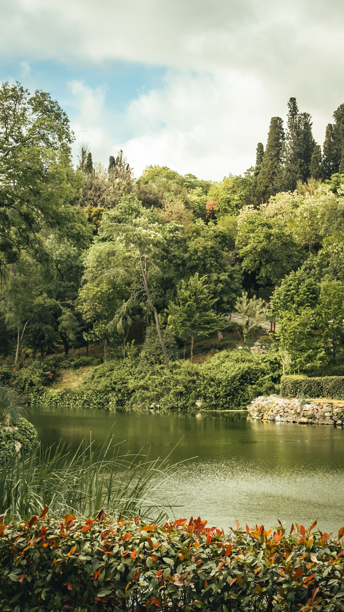

BİR ŞEHİR DEFTERİ / KENAR NOTU 05
BU REHBER NE İŞE YARAR?
Her güzel şey
bir sapakla
başlar.
Arka Sokak, İstanbul'u acele etmeden keşfetmek isteyenler için küçük bir başlangıç noktası.

BİR SOKAK DAHA ÖĞREN.YOLUN AÇIK OLSUN.
NEDEN BU KONU?
Çünkü yaşadığımız
şehri yeniden
görebiliriz.
İstanbul çoğu zaman yetişilecek bir yer, geçilecek bir yol gibi. Oysa her mahallenin içinde, biraz yavaşlayınca fark edilen bir köşe saklı: küçük bir avlu, denize bakan bir basamak, ağaçların arasındaki sessiz bir patika.
Bu projeyi, gündelik şehrin içinde nefes alacak duraklar bulmayı sevdiğim için hazırladım. Rehber; İstanbul'da yaşayan ya da şehri ziyaret eden, yeni yerleri yürüyerek keşfetmek isteyen meraklılara hitap ediyor.
Beş kısa keşif başlığı, bir sonraki boş öğleden sonra için fikir versin. İçerikler sayfasındaki arama ile aklındaki kelimeyi yazıp sana yakın hissi bulabilirsin.
KEŞFE GERİ DÖN“Bazen şehri keşfetmenin en iyi yolu, bildiğin yolu biraz değiştirmektir.”
ARKA SOKAK DEFTERİ · 001